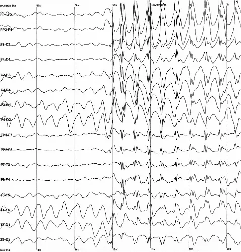

When I was young, life threw me a curveball I never saw coming — weakness down the right side of my body. My parents were incredibly concerned, so we went straight to the doctor. After MRIs, CT scans, and more, I was wheeled into the operating room to see if I had a tumor in my brain — which I didn’t, thank God!
After all those tests, they decided I had cerebral hemiatrophy. I was eight years old. In plain English: one half of my brain is smaller than the other — “hemi” means half, and “atrophy” means that part of the brain didn’t grow or stay as large as it should. That difference on one side of the brain is what set the stage for everything that came next. A few years later? Oh man — this is where the fun begins.
A little medical historyWhat cerebral hemiatrophy actually is — and why it set the stage
Cerebral hemiatrophy means exactly what it sounds like: one half of the brain is measurably smaller than the other. It’s not something that happens on its own — it’s almost always the downstream result of an earlier injury to that hemisphere, during a window when the brain is still developing. A perinatal stroke, a lack of oxygen around birth, an early infection, or a seizure disorder like Rasmussen’s encephalitis can all leave one side underdeveloped while the other side grows normally. The mismatch is what shows up years later on an MRI.
The condition has a name in the literature — Dyke-Davidoff-Masson syndrome — first described in 1933 by three radiologists who noticed the same pattern across a group of patients: a shrunken hemisphere, a thickened skull on that same side (the skull grows to fill the space the brain didn’t), and seizures. Before MRI existed, that triad was often the only way to even suspect it — doctors were reading skull X-rays for asymmetry, not looking directly at the brain. By the time I was diagnosed in 1998, an MRI could show it directly, in minutes, instead of inferring it from the shape of a skull.
The reason it matters for epilepsy is tissue, not symmetry. An atrophic hemisphere usually isn’t just smaller — it’s disorganized, scarred, or malformed in the exact way that makes neurons misfire and synchronize too easily. That’s the seed a seizure focus grows from. In the most severe cases — epilepsy confined to one damaged hemisphere that medication can’t touch — the surgical answer has historically been as radical as removing or disconnecting the entire hemisphere (a hemispherectomy, first attempted by Walter Dandy in 1928, later adapted for epilepsy and refined through the 20th century). My own case never needed anything that drastic — a left temporal lobectomy in 2017 took out the focus without touching the rest of the hemisphere — but the underlying asymmetry diagnosed at eight years old is the same reason that focus existed in the first place.

Electroencephalography (EEG)
The first big one
A massive seizure
I had a massive seizure — the kind that stops everything. One minute life is moving; the next, your body is gone and there’s nothing you can do about it. I ended up in the hospital for a few days to recover. Monitors. Questions. Waiting. The slow, shaky climb back to feeling like yourself again.
Those days in a hospital bed change you. You’re not just tired — you’re depleted. Your muscles ache. Your head feels wrong. People you love are scared in a way you can see on their faces even when they try to hide it. Doctors run tests and speak carefully. You start to understand that this wasn’t a fluke. Something in your brain had declared war, and recovery wasn’t overnight — it was hours and days of rest, of being watched, of wondering what comes next.
Throughout my life until I graduated high school, I was also having focal aware — or simple partial — seizures. In plain English: a focal aware seizure starts in one area of the brain, and you stay awake and aware while it’s happening — your body or senses may act up, but you’re still “there.” It might be a weird feeling, a twitch, a wave through your arm or face, something you can’t quite name. You’re present for all of it. You’re not unconscious. You’re just… interrupted.
Looking back, those moments were there for years — woven into ordinary days so tightly I treated them like nothing. A strange sensation. A brief glitch. Something I’d shrug off and keep moving. It didn’t bother me at all, because I did not know that I was having seizures. Nobody had given those episodes a name yet. To me, it was just how my body was. The massive seizure in the hospital was the thunderclap. The focal aware seizures were the quiet weather I’d been living in without realizing the storm had a label.
A little medical historyThe history of epilepsy
Epilepsy is one of the oldest-known conditions in medicine — described on Babylonian clay tablets over 3,000 years ago, where seizures were blamed on possession by a demon named Antasubba. For most of history, it was treated as a spiritual affliction, not a medical one. Around 400 BC, the Greek physician Hippocrates argued the opposite in his treatise On the Sacred Disease: epilepsy wasn't a curse, it was a disorder of the brain, with a physical cause like any other illness. It took over two thousand years for that view to actually win.
The stigma didn't fade with the science. Well into the 19th and 20th centuries, people with epilepsy in parts of the U.S. and Europe were barred from marrying, institutionalized, or sterilized under so-called "eugenics" laws — some of which stayed on the books until the 1970s. The actual neuroscience caught up faster: in 1873, British neurologist John Hughlings Jackson correctly described seizures as "occasional, sudden, excessive, rapid, and local discharges of grey matter" — the first real theory of what's happening at the cellular level, decades before anyone could record a brain in action.
That recording became possible in 1924, when German physiologist Hans Berger built the first human EEG — the same technology in the photo above — and used it to directly capture the abnormal electrical discharges of a seizure for the first time. From there the field moved fast: the first anti-seizure drug (phenobarbital) arrived in 1912, epilepsy surgery was refined through the mid-20th century, the VNS was FDA-approved in 1997, and DBS followed in 2018. Each device in my own story — EEG to find it, a lobectomy to remove it, a VNS and then DBS to calm it — is a direct descendant of that 2,400-year argument Hippocrates started: this is a brain disease, and brain diseases can be treated.
The International League Against Epilepsy (ILAE) classifies seizures first by where they start: focal (one area of the brain), generalized (both hemispheres from the start), or unknown onset. A generalized tonic-clonic seizure (GTC) — what used to be called a "grand mal" — is the generalized category's most dramatic form, and the one I eventually started having in community college, on top of the focal aware seizures I'd already lived with for years without a name for them.
The name describes its two phases. The tonic phase comes first: every major muscle group contracts at once and locks rigid, often causing a fall, as the discharge recruits essentially the whole cortex into one synchronized rhythm within seconds. The clonic phase follows: that rigid contraction breaks into rhythmic jerking, as inhibitory circuits fight to shut the discharge down and briefly succeed, then fail, over and over, in fast alternation — the visible tug-of-war between a seizure and the brain trying to stop it.
What makes GTC different from the focal aware seizures I'd had for years isn't just size — it's awareness. A focal aware seizure stays contained enough that I'm still "there" through it. A GTC seizure takes the brainstem and cortical arousal systems with it, so consciousness goes with the rest of the brain, and I lose the time entirely — I don't get it back, and the only honest record of it is whatever the people around me saw.
What it looks like (blurred for comfort — tap to reveal)
Community college
When everything changed
In community college I started to have generalized tonic-clonic seizures. In plain English: these are the big ones people usually picture — your whole body stiffens (tonic), then jerks (clonic), and it involves both sides of the brain. You lose awareness. It’s intense, scary, and nothing like the quieter seizures I’d had before. After seeing my neurologist in my hometown, I was still having breakthrough seizures.
What that actually meant was darker than any textbook line. Consciousness gone. Your body seized by something you can’t bargain with — locked, then thrashing, while the world keeps moving without you. You don’t get to watch it. You wake up emptied, confused, sore, sometimes injured, staring at faces that saw what you couldn’t. The quiet seizures had been a secret glitch. These were a blackout. A theft. And even after the hometown neurologist, the breakthroughs kept coming — proof that the dark wasn’t done with me yet.
After much contemplation, I decided to go down to UCLA Medical Center. UCLA’s Neurology & Neurosurgery department routinely ranks among the top 10 in the nation and #1 in Southern California. I was instantly into telemetry so the doctors could find the focal point of my seizures.
Choosing UCLA felt like stepping toward light. I wasn’t running from epilepsy anymore — I was walking into a place built to understand it. Telemetry meant answers: mapping the storm so we could finally see where it started. It wasn’t only fear; it was hope with a plan. A team skilled enough to fight for my future. A path that said my life could be more than breakthroughs and recovery beds. For the first time in a long time, the next chapter had a destination — and I believed I might get there.
2017 — right after surgery (blurred for comfort — tap to reveal)
2017 — after the resection (blurred for comfort — tap to reveal)
2017
Left anterior temporal lobectomy
In 2017, I went all in. Surgeons performed a left anterior temporal lobectomy — they cut out part of my brain in a desperate, calculated fight to stop the seizures. For a moment, it felt like the war might finally be over.
That decision was not casual. The left temporal lobe is where a lot of what makes you you lives — language, naming, verbal memory, the ability to pull a word when you need it. On the dominant side, a resection like mine carries real risk: lasting speech problems, memory loss, trouble finding words, changes in mood or personality, infection, bleeding, stroke, even deficits that don’t fully reverse. You don’t sign those papers lightly. You sit with the fear that the cure could cost pieces of who you are.
I knew the stakes. My family knew the stakes. The surgeons were clear: this was major brain surgery, and there were no guarantees — not that the seizures would stop, and not that I’d walk out exactly the same person who walked in. Still, the seizures were already stealing my life. So I chose the risk. I chose the operating room. I chose to fight.
Then, a few months later, lightning struck again: a breakthrough seizure. Hope cracked. The operating room hadn’t been enough. Back to the drawing board.
2017 — the next day (blurred for comfort — tap to reveal)
A little medical historyWhere the anterior temporal lobectomy came from
Cutting into the brain to stop seizures isn't new. British surgeon Victor Horsley performed the first deliberate epilepsy operation in 1886, removing scar tissue he'd traced to a patient's seizures using the still-new idea that different parts of the cortex controlled different functions. The temporal lobe version came decades later, out of the Montreal Neurological Institute, where Wilder Penfield and Herbert Jasper operated on patients who stayed awake under local anesthetic through the 1930s–50s. Electrically stimulating the exposed cortex let them map speech and memory in real time and mark the boundary of what could safely come out — the same awake-mapping idea that still guides surgery near language areas today.
The operation itself was standardized in the 1950s by Murray Falconer at the Maudsley Hospital in London, who removed the anterior temporal lobe en bloc — as one connected piece, hippocampus included — rather than piecemeal. Falconer's version is, in its essentials, the same anterior temporal lobectomy still performed now, built around a simple finding: a huge share of drug-resistant temporal lobe epilepsy traces back to hippocampal sclerosis, scarring in that one structure, and taking it out along with the surrounding lobe stops the seizures far more often than medication alone ever does.
That last part took a long time to become official. Surgery sat on the shelf as a "last resort" for decades, used only after years of failed drugs, until a 2001 randomized controlled trial by Wiebe et al. in the New England Journal of Medicine finally put it head-to-head against continued medication — and found most surgical patients became seizure-free, versus almost none on drugs alone. Determining which side was safe to cut had its own breakthrough: the Wada test, developed by Juhn Wada in 1949, sedates one hemisphere at a time through the carotid artery so surgeons can confirm which side actually handles language before committing to a dominant-side resection like mine.
2019
Vagus nerve stimulator
In 2019 I chose to have a vagus nerve stimulator put in. I wasn’t finished fighting. It helped a little — but breakthrough seizures still came. That didn’t stop me. Resection and VNS were already in. The big guns were out to play — and I was still standing.
By then I’d already walked a long road to get there. Cerebral hemiatrophy as a kid. A massive seizure and hospital days. Years of focal aware seizures I didn’t even recognize. Then the big tonic-clonic seizures in community college, breakthroughs that kept coming, UCLA and telemetry to map the storm, and in 2017 a left anterior temporal lobectomy that still couldn’t finish the war. The VNS was the next move after all of that — resection plus stimulator, everything we had short of going deeper. And when the breakthroughs still showed up, the path ahead pointed somewhere harder: DBS.
How it worksHow a vagus nerve stimulator actually calms a seizure network
A VNS doesn’t touch the brain at all. The device — a pulse generator about the size of a matchbook — sits under the skin in the upper chest, with a thin lead wrapped around the left vagus nerve in the neck. Left, not right: the right vagus carries more of the fibers that regulate heart rate, so stimulating it risks slowing the heart down. The left side avoids most of that.
Those pulses travel up afferent vagal fibers into the brainstem, into a relay station called the nucleus tractus solitarius. From there, signals fan out to the locus coeruleus and the raphe nuclei — the brain’s main noradrenaline and serotonin sources — which project diffusely across the whole cortex. The net effect is a broad rise in inhibitory tone: more GABAergic activity, a higher threshold the next hypersynchronous discharge has to clear. It isn’t aimed at one spot. It raises the floor everywhere at once.
Most VNS devices run open-loop: a fixed schedule — stimulate for 30 seconds, rest for 5 minutes, repeat, all day — regardless of what the brain is actually doing. Newer models add a closed-loop layer: an onboard algorithm that watches heart rate, because many seizures cause a sudden spike (ictal tachycardia), and fires an extra burst of stimulation automatically the moment it detects one. Patients also carry a magnet they can swipe over the device by hand, to trigger stimulation on demand the second they feel an aura coming on.
A little medical historyWhere DBS came from — and how it reached epilepsy
Deep brain stimulation traces back to 1947, when Spiegel and Wycis built the first human stereotactic frame for precisely targeting deep brain structures. In 1963, researchers found that high-frequency electrical pulses to the thalamus could calm tremor instead of destroying tissue — and in 1987, Dr. Alim-Louis Benabid pioneered chronic, implanted stimulation for tremor, kicking off the modern DBS era. The FDA approved DBS for essential tremor in 1997, Parkinson’s disease in 2002, and dystonia in 2003.
DBS for epilepsy came later. Researchers targeted the anterior nucleus of the thalamus (ANT) — a hub in the brain’s seizure-spreading circuitry — and Medtronic ran the pivotal SANTE trial from 2003–2008 across 17 U.S. centers. The results held up: a 40% median seizure reduction at three months, improving further over years of follow-up. On April 27, 2018, the FDA approved DBS as a treatment for drug-resistant epilepsy — just four years before my own leads went in.
2022
Deep brain stimulation
I was done waiting for epilepsy to decide my life. DBS was next — and I chose it on purpose. In consultation with my surgeon, I committed to putting two deep leads in my brain. In 2022, I walked into that operating room ready. This was the line I would not retreat from.
DBS is not a small step. You’re asking a surgical team to place hardware deep in the brain — leads, wires, a stimulator under the skin — and live with it. The risks are real: bleeding, infection, hardware problems, stroke, pain at the implant site, unwanted stimulation side effects, mood changes, and the chance it simply doesn’t help enough. You can need revisions. Batteries don’t last forever. You’re signing up for appointments, programming sessions, and a device that becomes part of your body.
The reward, if it works, is the reason people still choose it: a chance to turn the volume down on seizures, to get days back, to feel like yourself again. For me the upside was worth the gamble — not because the risk disappeared, but because living without trying was already costing too much.
Then came the long fight after the fight: nearly four years with my doctors and the team at Medtronic, refusing to quit until we found a golden setting. On March 18, 2026, they started testing low pulse stimulation 24/7. It’s been about seven months since they added that setting — and it was the right choice. The DBS has changed my life. My depression has evaporated. I stayed the course. And it held.
2022 — the incisions, close up (blurred for comfort — tap to reveal)
2022 — right after surgery (blurred for comfort — tap to reveal)
2022 — after DBS (blurred for comfort — tap to reveal)
How it worksWhat's actually inside a DBS system — and why "finding a setting" takes years
The hardware is deceptively simple: two thin leads, each with multiple metal contacts, placed deep in the brain through small burr holes using a stereotactic frame and MRI guidance precise enough to land within a millimeter of the target. The leads run under the scalp and skin to an implantable pulse generator (IPG) — the actual battery and electronics — tucked under the skin, usually below the collarbone or in the abdomen.
Unlike a VNS’s one-size-fits-all schedule, a DBS system has a huge number of adjustable variables: which contacts on each lead are active, in what polarity (monopolar vs. bipolar), the pulse frequency (Hz), pulse width (microseconds), amplitude (mA or volts), and whether stimulation runs continuously or in a duty cycle (minutes on, minutes off). That’s thousands of possible combinations per side — which is exactly why “programming” is its own ongoing process, not a one-time setup. Each visit, the amplitude or contact gets nudged, the effect gets tracked over weeks, and the search continues.
Mechanistically, high-frequency stimulation at the anterior thalamus doesn’t destroy anything — it jams the signal. It disrupts the thalamus’s ability to relay and synchronize rhythms across the cortex, through a mix of depolarization blockade, synaptic depression, and masking of the pathological oscillations a seizure focus needs to recruit the rest of the network. Instead of silencing the spark, it makes it much harder for the spark to catch.
That’s the backdrop for the “golden setting” from March 2026: nearly four years of incremental adjustments — this contact, that amplitude, this duty cycle — until one specific combination, low pulse stimulation running continuously, finally held. A search.
Freedom from my depression. I’m still having seizures — but the sting is no longer there.
The scienceWhat's actually happening in a seizure
In a healthy brain, neurons fire in a constantly shifting balance between excitation (mostly driven by the neurotransmitter glutamate) and inhibition (mostly driven by GABA). Voltage-gated sodium, potassium, and calcium channels decide exactly when a neuron fires and when it resets, and a layer of inhibitory interneurons acts like a crowd of circuit breakers, keeping nearby neurons from ever firing in lockstep. Zoomed out, that looks like noise on an EEG — because it is millions of independent conversations happening at once, not one shout.
A seizure starts when a group of neurons becomes abnormally excitable — in my case, inside the left temporal lobe. Scar tissue, channel dysfunction, or a local drop in inhibition can trigger what's called a paroxysmal depolarization shift: a surge of calcium and NMDA-receptor-driven depolarization that fires a neuron far harder and longer than normal, followed by a sharp after-hyperpolarization as potassium and GABA-B currents try to shut it back down. One neuron misfiring like that isn't a seizure yet. It becomes one the moment that shutdown fails and the surrounding tissue gets pulled into firing on the same beat instead of resisting it.
That's the actual mechanism: hypersynchronization. Instead of neurons firing independently, a whole region locks into one rhythm — like a crowd that starts clapping in unison instead of talking over each other. If the discharge stays contained to where it started, that's a focal seizure. If it spreads — through local cortical wiring, across the corpus callosum to the other hemisphere, or through the thalamus, which normally times rhythms across the entire cortex — it becomes a focal-to-bilateral seizure, and the clapping becomes the whole stadium.
A seizure doesn't just run out of fuel. It gets actively shut down by the same inhibitory systems that failed to stop it from starting — GABA-B receptors, potassium channels, and a flood of adenosine that acts like an emergency brake on the whole network. That's the actual mechanism behind the postictal state: the brain swings hard from hyperactive to suppressed, and the confusion, exhaustion, and memory gaps afterward are what that reset looks like from the inside.
Every major treatment I've had goes after a different point in that same chain. The 2017 lobectomy removed the actual tissue where the paroxysmal shift kept starting — cutting out the spark. The VNS, implanted in 2019, doesn't touch brain tissue directly; it stimulates the vagus nerve, which signals into the brainstem and raises inhibitory tone broadly across the cortex, making the next spark harder to catch. The DBS leads sit deep in the thalamus — the hub epilepsy devices typically target — interrupting the relay a focal discharge needs to recruit the rest of the brain into its rhythm. Three different treatments. Three different points on the exact same circuit.
A simplified look at cortical electrical activity — before, during, and after
A simplified, illustrative schematic of general seizure electrophysiology — not an actual EEG recording from my case.
Try it: watch hypersynchronization spread through a small network
Each dot is a tiny patch of cortex, wired to its neighbors. Click any dot (or hit the button) to start a discharge, then drag the sliders — exactly like the surround-inhibition and connectivity described above — and watch whether it stays small or takes over the whole grid.
Click a dot, or hit “Trigger focal discharge,” to start.
Zoom in furtherSimulating one real neuron, with the actual equations
The grid above shows neurons as simple on/off dots. A real neuron isn't on/off — its voltage is governed by sodium, potassium, and leak channels opening and closing continuously. In 1952, Alan Hodgkin and Andrew Huxley measured exactly how, in squid giant axon, and wrote it as four coupled differential equations. It's still the equations every computational neuroscience model builds on, and it's what's actually running below — not a canned animation, a live numerical simulation integrated in your browser via 4th-order Runge-Kutta, 60 times a second.
Turn up injected current and watch the membrane cross threshold and fire — a textbook action potential, over and over, exactly like the real thing. Then turn up inhibitory tone — the same GABA-receptor conductance that VNS and DBS lean on — and watch it shut the same neuron down, even under heavy current. This is the one-neuron version of everything described above.
Try it: fire a real Hodgkin-Huxley neuron
This is a live simulation, not a recording — the trace below is the actual membrane voltage of a numerically-integrated neuron, updating in real time as you move the sliders.
Resting — below firing threshold.
Seizures, year by year — 2016 to 2026
2026 is year-to-date (through Sept 18). Hover or tap any bar for the exact count and milestones — left temporal lobectomy (2017), VNS implant (2019), DBS implant (2022), and the DBS setting that finally held (March 2026).
👀 Curious about the medical side? Switch to
dark mode to see the surgery photos from this story — blurred by default, tap any photo to reveal it.